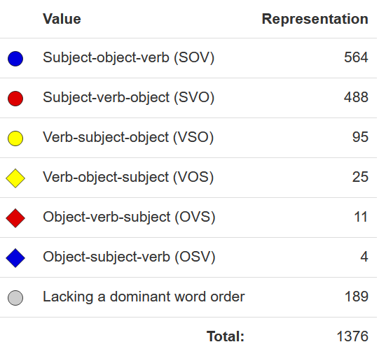
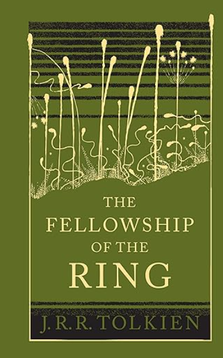

<section class="clicker"></section> ### Would you still have taken LIGN 101 if it were a lower-division class? - A) Yes, because it's a major requirement - B) Yes, absolutely - C) Yes, but I'm glad it counts as upper division - D) No, it wouldn't have appealed to me as lower division class - E) No, it wouldn't satisfy requirements I need as a lower division class --- ### Reminders - All grades are final seven days after they are released - All other grades are final at the start of the exam - Double-check everything next week! - Clicker and SONA scores are being sorted soon - SET evaluations are currently at 51.28%, so unfortunately no extra credit yet; I'll give it until the end of the day - https://sites.google.com/view/matthewzaslansky/exampolicies has all the information you want - We'll have a study session next Week (Monday 4-6pm in CENTR 222) --- # Linguistics 101: An Introduction to Language ### Dr. Matt Zaslansky --- ### Today's Plan - Where we've been... - ...where we're going: Your Linguistic Future - ...and where <strong>I've</strong> been - A Life in Language - The Secret to Great Linguistic Analysis --- # Where we've been --- ### We've only gotten a small taste of linguistic diversity - We've seen data from a lot of language, but we're only seeing the tip of the iceberg - This diversity isn't arbitrary or apparent only at the marginal fringes. It's a core defining feature of what makes language human --- ### Diversity: Phonology - From consonant inventories... <small>([From WALS](https://wals.info/feature/1A#2/19.3/152.8))</small> --- ### Diversity: Phonology - ...to vowel inventories... <img class="r-stretch" src="img/wals_vowel_inv.png"> <small>([From WALS](https://wals.info/feature/2A#1/36/222))</small> --- ### Diversity: Phonology <img class="small" src="img/wals_vowel_inv_legend.png"> --- ### Diversity: Phonology - ...to where we find tone and how complex it is... <img class="r-stretch" src="img/wals_tone.png"> <small>([From WALS](https://wals.info/feature/13A#1/22/157))</small> --- ### Diversity: Phonology --- ### Diversity: Phonology - ...even to which consonants are common and where! <img class="r-stretch" src="img/wals_common_consonants_legend.png"></p> --- ### Diversity: Phonology <small>([From WALS](https://wals.info/feature/18A#2/14.3/205.1))</small> --- ### And that's just some phonological elements - There's plenty of variation in morphology and syntax too --- ### Diversity: Morphology - Morphology is perhaps the area where we see the most variation across languages - Just think of gender! - Some languages, like Turkish, completely lack it - Some languages, like English, have it only in pronouns - Some languages, like Russian, have it everywhere --- ### Russian Gender - sobaka vidye-la koshk-u - dog.NOM see-SG.FEM.PST cat-ACC.FEM - "The dog saw the cat." - ya vidye-la koshk-u - 1SG.NOM see-SG.FEM.PST cat-ACC.FEM - "I saw the dog [and I am a woman]." - ya vidye-l sobak-u - 1SG.NOM see-SG.MASC.PST dog-ACC.FEM - "I saw the dog [and I am a man]." --- ### Diversity: Morphological gender - Turns out there's more variation in this than just having or not having gender... <img class="r-stretch" src="img/wals_gender_legend.png"> <small>([From WALS](https://wals.info/feature/30A#2/26.7/148.9))</small> --- ### Diversity: Morphological gender --- ### Diversity: Morphological gender - Languages like Arapesh (Torricelli, Papua New Guinea), have either as few as 13 genders or as many as 22 genders, depending on how you look at it. <small>(Source: Corbett & Fraser 2000)</small> --- ### Diversity: Syntax - Even the basic building blocks of our sentences vary - Remember word order?  <small>([From WALS](https://wals.info/feature/81A#2/18.0/153.1))</small> --- ### Diversity: Syntax <img class="r-stretch" src="img/wals_word_order.png"> --- # Your Linguistic Future --- ### Admit it... - Some part of what we've learned about Linguistics has been fun! - To find out more about majors or minors, contact <linginfo@ling.ucsd.edu> :) - <img class="r-stretch" src="img/plug.jpg"> --- <img class="r-stretch" src="humorimg/joinme.jpg"> --- ### Many of you are already linguists and don't know it yet - Serial language learners - Language Analyzers - Easily distracted by odd language use - People fascinated by the differences and similarities among languages - *If any of those things sound like you, you might be a linguist* --- ### I started college as a Geology major - I wanted to be a volcanologist - I thought it would get me free trips to Hawai'i and that sounded cool. - Then Linguistics hunted me down. --- ## Case Systems --- ### Grammatical Relations How a language marks who did what to whom --- ### English uses word order to mark grammatical relations. - ... but that's not the only way! --- ## Case Marking - Use of inflectional morphemes to mark Grammatical Relations --- ### Russian has case markers * Each case marker corresponds to a grammatical role * **Nominative Case** - "The Subject" * **Accusative Case** - "The Object" --- ### Russian Case Marking - sobaka vidye-la koshk-u - dog.NOM see-SG.FEM.PST cat-ACC.FEM - "The dog saw the cat." - koshka vidye-la sobak-u - cat.NOM see-SG.FEM.PST dog-ACC.FEM - "The cat saw the dog." --- ### Russian Case Marking - Ya tyebya vizh-u - I.NOM you.ACC see-1SG - "I see you" - Ti myenya vid-ish - you.NOM I.ACC see-2SG - "You see me" --- <section class="clicker"></section> ### If we put the sentence "Niloo hugged the turtle" into Russian, the proper cases would be... A) Niloo - NOM, Turtle - ACC B) Niloo - ACC, Turtle - NOM C) Niloo - NOM, Turtle - NOM D) Niloo - ACC, Turtle - ACC --- ### If we put the sentence "Niloo hugged the turtle" into Russian, the proper cases would be... A) <correct>Niloo - NOM, Turtle - ACC</correct> B) Niloo - ACC, Turtle - NOM C) Niloo - NOM, Turtle - NOM D) Niloo - ACC, Turtle - ACC --- ### In Russian, Word order can be used for Pragmatics * Koshka videla sobaku * "The cat saw the dog" * Videla koshka sobaku * "The cat saw the dog" * Sobaku videla Koshka * "The cat saw the dog" - Russian is a "non-configurational" language --- ### English has some case too! * I see him * I-NOM see he-ACC * He sees me * He-NOM see-3sg I-ACC --- ### You know what other language has case? --- <lang>Quenya</lang><br><ldata>Eldarin</ldata> <img class="r-stretch" src="img/galadriel.jpg"> --- (... and I didn't think I was a linguist)  --- ### ... but Russian has more cases! --- ## The Russian Case System * **Nominative Case** - "The Subject" * **Accusative Case** - "The Direct Object" * **Dative Case** - "The Indirect Object or Recipient" * **Genitive Case** - "The Possessor (and more)" * **Locative Case** - "The Location (and more)" * **Instrumental Case** - "The Tool (and more)" --- ### Genitive Case Marks possession --- ### Genitive Case in Action * Ya vi-zhu sharik sobak-i * 1sg.NOM see-1sg ball-ACC dog-GEN * "I see the dog's ball" --- ### Locative Case Marks the location of events * (this is also called the "Prepositional Case") --- ### Locative Case in action - Ya zhiv-u v Californi-i - 1sg.NOM live-1sg in California-LOC - "I live in California" --- ### Instrumental Case Marks an object being used --- ### Instrumental Case in Action * Andres pish-et karandash-om * Andres-NOM write-3sg pencil-INST * "Andres writes with a pencil" * Ya yem borscht so smetanoy * 1sg-NOM eat borscht-ACC with sour.cream-INST * "I eat borscht with sour cream" --- ### Dative Case Marks the indirect object, or recipient of an item --- ### Dative Case * Kevin dayot tsvet-i Lis-ye * Kevin-NOM give.3sg Flowers-ACC.PLUR Lisa-DAT * "Kevin gave Lisa flowers" * Enchilad-i mne da-la Niloo * Enchilada-ACC.PLUR 1sg.DAT give-PAST.FEM Niloo-NOM * "Niloo gave me Enchiladas" --- ### Dative as "Goal" * Ya pomoga-yu Kevinu * 1sg.NOM help-present.1sg Kevin-DAT * "I'm helping Kevin" * Mne zvoni-l Barack Obama * 1sg-DAT call-past.masc Barack Obama-NOM * "Barack Obama called me" --- <section class="clicker"></section> ### If we put the sentence "Jony gave Dieter some food" into Russian, the proper cases would be... A) Jony - ACC, Dieter - DAT, food - NOM B) Jony - NOM, Dieter - DAT, food - ACC C) Jony - NOM, Dieter - ACC, food - DAT D) Jony - DAT, Dieter - ACC, food - NOM --- ### If we put the sentence "Jony gave Dieter some pellets" into Russian, the proper cases would be... A) Jony - ACC, Dieter - DAT, Pellets - NOM <correct>B) Jony - NOM, Dieter - DAT, Pellets - ACC</correct> C) Jony - NOM, Dieter - ACC, Pellets - DAT D) Jony - DAT, Dieter - ACC, Pellets - NOM --- ## The Russian Case System * **Nominative Case** - "The Subject" * **Accusative Case** - "The Direct Object" * **Dative Case** - "The Indirect Object or Recipient" * **Genitive Case** - "The Possessor (and more)" * **Locative Case** - "The Location (and more)" * **Instrumental Case** - "The Tool (and more)" - *It's actually **way** more complicated than this!* --- (Whoa! That looks like some of the argument roles we saw in lexical semantics!) --- ### So, now you know the Russian system - Just in case. --- ### English can handle Nominative and Accusative. - I saw him - I.NOM saw he.DAT * ... but Dative? We just can't even. --- ### So, I took 'LING 1' - <img class="r-stretch" src="people/dryer.png"> --- ### ... and I declared a Linguistics major - --- <section class="clicker"></section> ### Approximately how many langauges around the world are endangered right now? A) 150 B) 1000 C) 2500 D) 4000 E) 5500 --- ### Approximately how many langauges around the world are endangered right now? A) 150 B) 1000 C) <correct>2500</correct> D) 4000 E) 5500 --- ### Endangered langauges in the USA <img class="r-stretch" src="img/UNESCO_red_USA.png"> <small>([From UNESCO's Red Book](https://unesdoc.unesco.org/ark:/48223/pf0000187026))</small> --- ### Endangered langauges in the Arctic <small>([From UNESCO's Red Book](https://unesdoc.unesco.org/ark:/48223/pf0000187026))</small> --- ### Endangered langauges in Mexico <img class="r-stretch" src="img/UNESCO_red_Mexico.png"> <small>([From UNESCO's Red Book](https://unesdoc.unesco.org/ark:/48223/pf0000187026))</small> --- ### Endangered langauges in South America <img class="r-stretch" src="img/UNESCO_red_South_America.png"> <small>([From UNESCO's Red Book](https://unesdoc.unesco.org/ark:/48223/pf0000187026))</small> --- ### Endangered langauges in Africa <small>([From UNESCO's Red Book](https://unesdoc.unesco.org/ark:/48223/pf0000187026))</small> --- ### Endangered langauges in the Himalayas <small>([From UNESCO's Red Book](https://unesdoc.unesco.org/ark:/48223/pf0000187026))</small> --- ### Endangered langauges in Europe <img class="r-stretch" src="img/UNESCO_red_Europe.png"> <small>([From UNESCO's Red Book](https://unesdoc.unesco.org/ark:/48223/pf0000187026))</small> --- ### (Endangered) Langauges in New York City <img class="r-stretch" src="img/ELA_NYC2.png"> <small>([From the Endangered Language Alliance](https://www.elalliance.org/))</small> <small>([via languagemap.nyc](hhttps://languagemap.nyc/))</small> --- ### Endangered langauges in the Caucasus <small>([From UNESCO's Red Book](https://unesdoc.unesco.org/ark:/48223/pf0000187026))</small> --- ### So I went on a research trip to 'study abroad' - I took my professor's advice, and that brought me to Baku <img class="r-stretch" src="img/flame_towers.png"> --- ### About those cases... - Eat your heart out Russian, Lezgian has 18 <small>(Source: Haspelmath 1993)</small> --- ### Lezgian Cases - stxa k'wal.i-z xta-na - brother.ABS house-DAT return-AOR - "The brother came back home." - wax-a stxa k'wal.i-z raqur-na - sister-ERG brother.ABS house-DAT send-AOR - "The sister sent the brother home." --- --- ### ... and then I took Phonetics - Then Phonology and Syntax - Then Morphology - LIGN 8's Equivalent - Then Semantics, then Pragmatics - Then some independent studies - This is an option at UCSD too! --- ### Then I realized I needed to figure out what was going on with that ergative case --- ### Then I realized I needed to figure out what was going on with that ergative case - I started looking at Grad schools - ... and applying - I got into some of them - (My application was straight trash.) --- ### Linguistics Grad School - Phonetics - Phonology - Morphology - Syntax - Semantics and Pragmatics - Field Methods --- ### ... and I attended the LSA Summer Institute - Every two years ([It's at UMass Amherst in Summer 2023!](https://www.linguisticsociety.org/content/umass-amherst-selected-host-2023-linguistic-institute)) - Take courses from amazing professors in interesting topics --- ### You'll also be put to work - As a TA or Graduate Instructor - Working on or managing research projects - You'll write large papers, alongside your coursework --- ### Then, you'll write a dissertation! - A large research project where you need to advance the knowledge of the field (just a little!) - Mine is in progress (help) --- ## Linguistics Jobs --- ### Linguists have one big problem on the job market - *"Oh, you're a linguist? Cool! How many languages do you speak?!"* - Lots of folks need linguists, but very few people know that they do or what we do! - We're called "Ontologists", "Natural Language Specialists", "Customer Feedback Analyst", "Language specialist", "Translation Director" and many, many more - Here's [a page from the LSA about Linguistics Jobs](https://www.linguisticsociety.org/resource/linguistics-profession) --- ### What else do linguists do? - Check out the [Linguistics Career Launch YouTube Channel](https://www.youtube.com/channel/UCNJRxM5T1SAtgT6Bhcext2Q) --- ### Linguists often make great data scientists - Industry loves Linguists, as we're great at patterns - Linguists have experience with language data, not just numbers - This is where [the CSS program](https://css.ucsd.edu/) can help! --- ### Industry loves computational linguists - Text to Speech, Speech Recognition, NLP, and more! - Consider LIGN 6, 165, 167, 168 for this - Google, Facebook, Apple, Amazon, and more hire and work with linguists! --- ### The Department of Defense loves linguists - The NSA/CIA/FBI (and more!) want linguists for analysis - Translation and language teaching like at the [DLIFLC](http://www.dliflc.edu/) --- ### Teaching English as a second language - Everybody wants people to teach English as a Second Language - Have language, will travel? Have job! --- ### Speech Pathology and Audiology - Speech Pathologists help adults and children having issues with communication, speech, swallowing, and voice. - Audiologists help test, diagnose, and address many hearing disorders, and work with people to find treatments (e.g. hearing aids) which address their needs and desires. - Both are steady, well-paid, and in demand jobs! - For these careers, consider our [Speech and Language Sciences Major!](https://linguistics.ucsd.edu/undergrad/majors/speech-language/index.html) --- ### Academic Positions - PostDocs are increasingly common - Also administrative and lab-management positions - ... but lots of folks want to be a Tenure-Track Professor --- ### As a Professor... - You have job security (if you don't screw up!) - You'll do research - You'll teach - You'll do administrative stuff - You'll fight for grant money - ... but you'll do all of it in pursuit of a field you love --- ### There's one problem with planning to be a professor... --- ### The Linguistics Academic Job Market <img class="wide" src="humorimg/hell.jpg"> --- ### The Academic Job Market is tough - There will be 2-5 jobs per year in your subfield at well-known schools. Total. - Competition is fierce - Jobs can have 100+ Applicants - 10-15 get online interviews - 3-5 visit campus - 1 job! - You have to love teaching - Research-only jobs are very rare - "Wait your turn, you only need one job" - ... but boy, that sucks. --- ### It's not an easy path - You're going where the work is - I hope your people are mobile! - You need to be able to tread water for a few years - You're taking a vow of fiscal renunciation during Grad School - ... and you'll make more money in industry than as a professor --- ### Your life may not be like mine - You may choose industry over academia - You may choose to pursue Linguistics as a component of a different career elsewhere - You may combine your love of Language with your love of something else - You may even be able to convince yourself that you're not a linguist --- ### ... but it could be - Maybe you'll go down the rabbit hole - Maybe this class will do for you what 101 did for me - ... and you'll see the true beauty of language --- ### You've come a long way in this class - ... but one thing is for sure --- ### In the future, you'll all need to do linguistic analysis - Perhaps as part of your teaching or research, if you decide to go the academic route - Maybe in industry or defense, if that's your path - Maybe for fun, on the weekends - ... and during the week - You'll want to do it well! --- # The Secret to Great Linguistic Analysis --- ### Most linguistics students don't learn this until graduate school - Many not until a post-doc - Some, not until they're full professors - Some poor souls never figure it out! - **... but you'll know it today!** --- ### We'll end the class like we've lived the class, staring at data! - *To discover the secret to Great Linguistic Analysis, you'll need to figure out...* --- ### What is the Russian morpheme marking first person (e.g. 'I do _____') for these verbs? <br> <style type="text/css"> .tg {border-collapse:collapse;border-spacing:0;} .tg td{font-family:Arial, sans-serif;padding:10px 5px;border-style:solid;border-width:1px;overflow:hidden;word-break:normal;border-color:black;} .tg th{font-family:Arial, sans-serif;font-weight:normal;padding:10px 5px;border-style:solid;border-width:1px;overflow:hidden;word-break:normal;border-color:black;} .tg .tg-0pky{border-color:inherit;text-align:left;vertical-align:top} .tg .tg-0pk{font-weight:bold;border-color:inherit;text-align:left;vertical-align:top} </style> <table class="tg"> <b> <tr> <th class="tg-0pk">Russian</th> <th class="tg-0pk">English</th> <th class="tg-0pk">Russian</th> <th class="tg-0pk">English</th> <th class="tg-0pk">Russian</th> <th class="tg-0pk">English</th> </tr> </b> <tr> <td class="tg-0pky">djelat</td> <td class="tg-0pky"><em>'to do'</em></td> <td class="tg-0pky">pit</td> <td class="tg-0pky"><em>'to drink'</em></td> <td class="tg-0pky">staret</td> <td class="tg-0pky"><em>'to grow old'</em></td> </tr> <tr> <td class="tg-0pky">djelaju</td> <td class="tg-0pky"><em>'I do'</em></td> <td class="tg-0pky">pju</td> <td class="tg-0pky"><em>'I drink'</em></td> <td class="tg-0pky">stareju</td> <td class="tg-0pky"><em>'I grow old'</em></td> </tr> <tr> <td class="tg-0pky">djelajet</td> <td class="tg-0pky"><em>'(s)he does'</em></td> <td class="tg-0pky">pjet</td> <td class="tg-0pky"><em>'(s)he drinks'</em></td> <td class="tg-0pky">starejet<br></td> <td class="tg-0pky"><em>'(s)he grows old'</em></td> </tr> <!-- <tr> <td class="tg-0pky">tʃitaju</td> <td class="tg-0pky">'I read'</td> <td class="tg-0pky">risuju</td> <td class="tg-0pky">'I draw'</td> </tr> <tr> <td class="tg-0pky">tʃitajet</td> <td class="tg-0pky">'(s)he reads'</td> <td class="tg-0pky">risujet</td> <td class="tg-0pky">'(s)he draws'</td> </tr>--> </table> --- # The secret to great linguistic analysis was /ju/ all along! --- ### Go forth and do great analysis - ... and see the beauty of language - Wherever you may go --- <huge>Thank you!</huge>